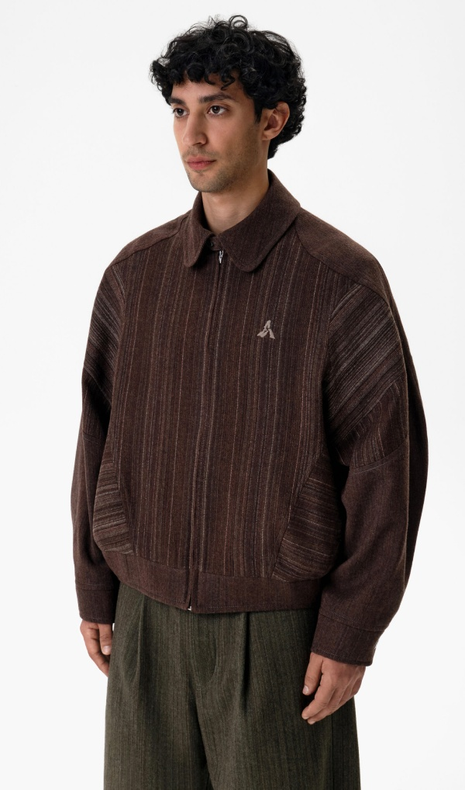
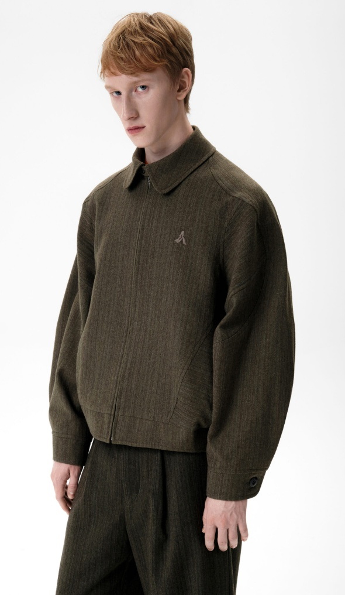
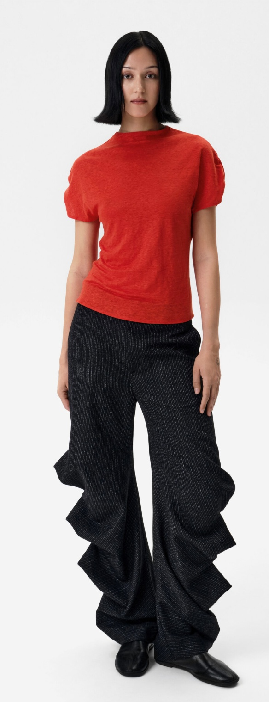
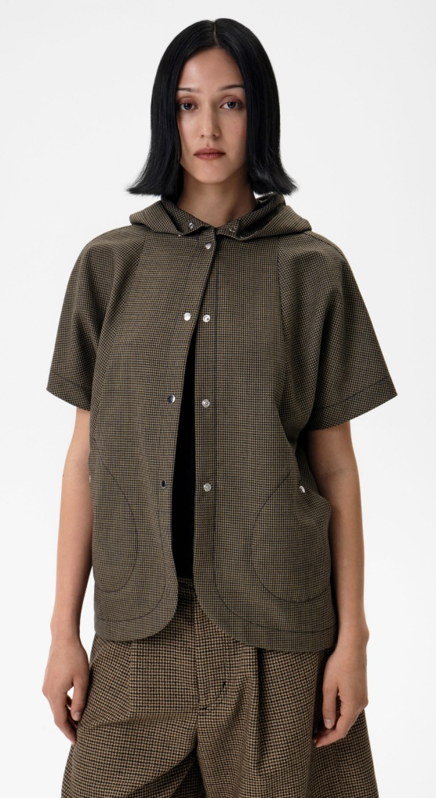

Коллекция SS26
Коллекция SS26 положила начало долгосрочному сотрудничеству с брендом, для которого ключевыми являются точность, конструкция и внимание к деталям.


Коллекция SS26 требовала глубокой проработки модельного ряда: сложный крой, нестандартные силуэты и работа с премиальными материалами не допускали упрощений на этапе производства.


Основная задача заключалась не только в пошиве тиража, а в том, чтобы сохранить характер изделий на уровне образцов — с той же точностью линий, посадки и обработки.
Это один из проектов, в котором особенно ясно видно, насколько важно удерживать качество при переходе от идеи к тиражу.